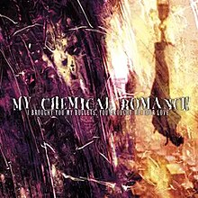
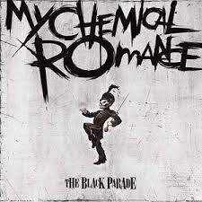

Su estilo musical ha sido asociado a los generos rock, punk, pop punk, post-hardcore. Entre las influencias que han citado estan diversos artistas como Queen, MC5, Misfits.. etc.
#✩1 ALBUM !
En 2002, firmaron con el sello independiente Eyeball Records para grabar su primer album, titulado I brought you my bullets, you brought me your love.
Gerard Way dijo que las letras eran una manera de tratar los problemas de depresion con los que habia lidiado gran parte de su vida y que lo habian llevado al alcoholismo e incluso a contemplar el suicidio, como el mismo ha afirmado en varias entrevistas. Estos problemas se reflejan en titulos como «Honey, this mirror isn't big enough for the two of us», «Demolition Lovers», «Drowning lessons», «Our Lady of Sorrows» y «Vampires will never hurt you». Despues de escuchar el album completo, Gerard dijo que el proximo album no lo haria tan siniestro.

#✩2 ALBUM !
La banda comenzo a trabajar en su segundo disco, y el 8 de junio de 2004, con un estilo mas maduro y consolidado, publicaron Three cheers for sweet revenge, especialmente dedicado a la abuela de Gerard y Michael Way, Elena Lee Rush, que murio dos semanas antes de la publicacion del album. Ella les habia apoyado toda la vida y le enseño a cantar, actuar y dibujar a Gerard. La primera cancion del CD, «Helena», esta dedicada a ella.
Fue el comienzo de su ascenso en la musica, con el que se dieron a conocer en los Estados Unidos, Latinoamerica, Europa y Japon. Las canciones mas reconocidas son «Helena», «I'm not okay (I promise)» y «The ghost of you», teniendo todas ellas su respectivo videoclip.
En comparacion con I brought you my bullets, you brought me your love, el caracter del segundo album es un poco menos ‘agresivo.' La muerte era un elemento claramente recurrente en muchas —si no todas— las canciones de la banda por ese entonces, caracteristica presente en todos sus discos. Desde temas como «The ghost of you» y «To the end» que claramente evocan escenarios funebres, hasta «Thank you for the venom» y «Cemetery drive», que tratan de una manera franca y no muy sutil el suicidio como alternativa a una vida de miseria y depresion.

#✩3 ALBUM !
El 23 de octubre la banda edito su tercer album de estudio, The Black Parade. Dijeron que The Black Parade es su alter ego para este disco, lo que se noto en el cambio a un estilo de rock mas clasico y propio de los años setenta. En una conferencia de prensa previa al estreno, describieron el album como «epico, teatral, orquestal y grandioso». Mencionaron incluso que este era el album por el que querian ser recordados.
En los conciertos del 4 y 7 de octubre de 2007 en Mexico, Way interpreto al Paciente por ultima vez. La agrupacion destaco con las canciones «Mama» y «Famous last words», las cuales presentaban un espectaculo de fuego y pirotecnia muy bien realizado. Al final Way expreso en perfecto español: «¡Gracias, Mexico! ¡gracias, Monterrey!».

#✩4 ALBUM !
La totalidad de las canciones del album, titulado Danger days: the true lives of the Fabulous Killjoys, se hicieron publicas por primera vez el dia martes 16 de noviembre, en un video mostrado en la pagina web de la banda; en el clip, las canciones eran presentadas en un ficticio programa radial, conducido por el personaje del álbum Dr. Death Defying. Fue su cuarto álbum y último hasta la fecha.
''Danger days es lo que se necesita para hacer algo grandioso, es a lo que le temes mucho para hacer un gran album. True lives of the Fabulous Killjoys se refiere a nosotros, a los fanes, a todos los artistas que conocemos y ayudaron a darle forma al disco. Se trata de los artistas; es para los artistas.'' Explica Gerard Way el titulo de su album.

♰ "∘ .╰♯ ʀᴇɢʀᴇꜱᴀʀ ₊⊹ ^_< -★ .
La totalidad de las canciones del album, titulado Danger days: the true lives of the Fabulous Killjoys, se hicieron publicas por primera vez el dia martes 16 de noviembre, en un video mostrado en la pagina web de la banda; en el clip, las canciones eran presentadas en un ficticio programa radial, conducido por el personaje del álbum Dr. Death Defying. Fue su cuarto álbum y último hasta la fecha.
''Danger days es lo que se necesita para hacer algo grandioso, es a lo que le temes mucho para hacer un gran album. True lives of the Fabulous Killjoys se refiere a nosotros, a los fanes, a todos los artistas que conocemos y ayudaron a darle forma al disco. Se trata de los artistas; es para los artistas.'' Explica Gerard Way el titulo de su album.
♰ "∘ .╰♯ ʀᴇɢʀᴇꜱᴀʀ ₊⊹ ^_< -★ .